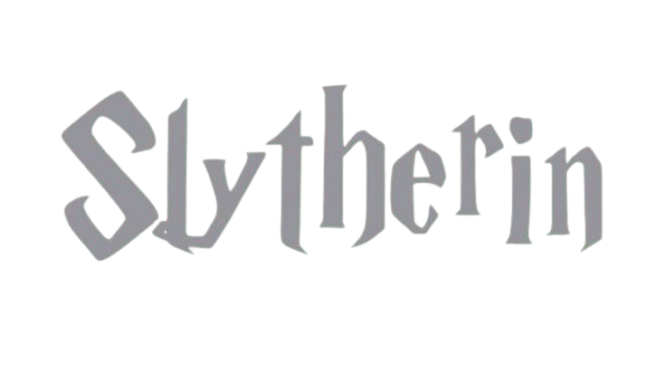
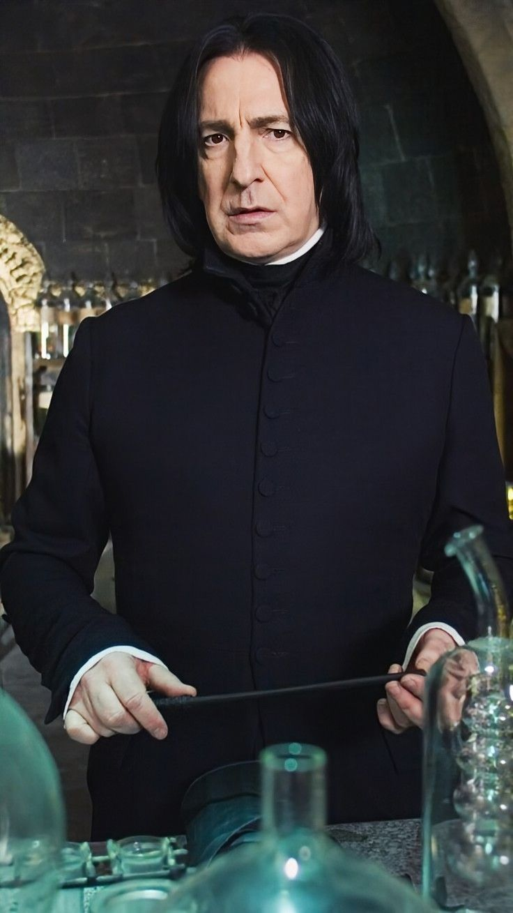
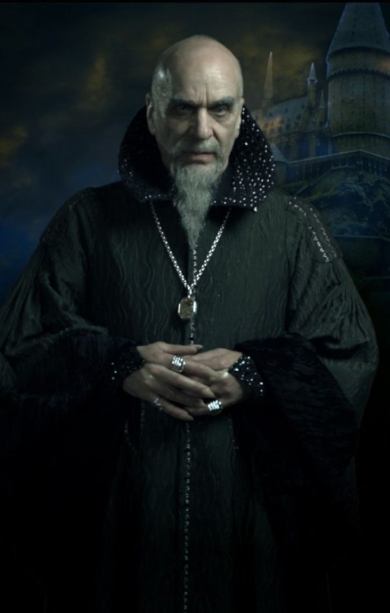
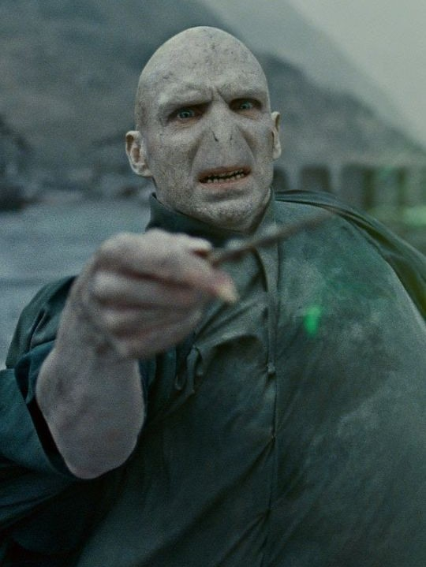
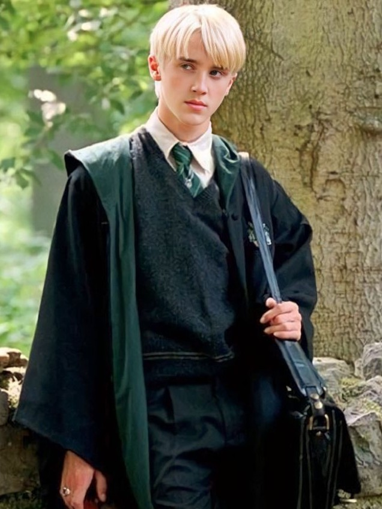
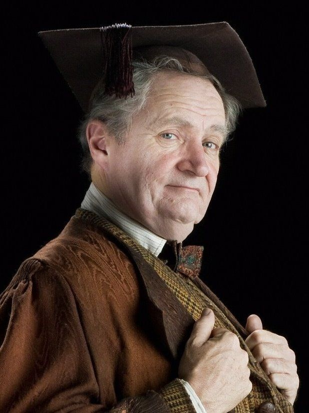
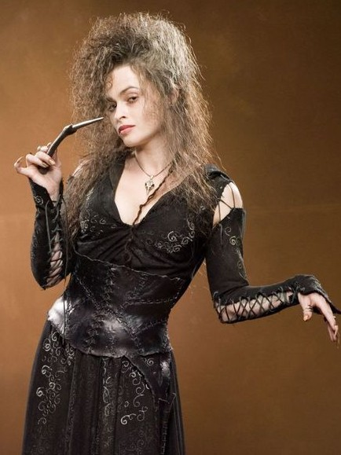
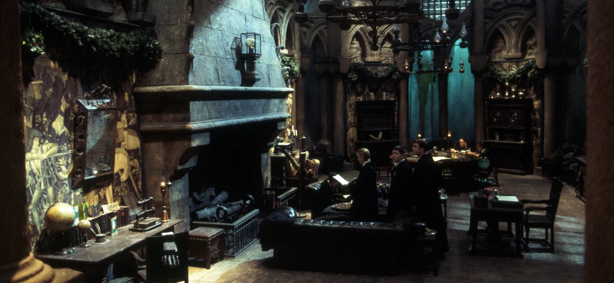

"Ou quem sabe a Sonserina será a sua casa E ali fará seus verdadeiros amigos, Homens de astúcia que usam quaisquer meios Para atingir os fins que antes colimaram." — O Chapéu Seletor

Coordenador
Severo Snape

Fundador
Salazar Sonserina

Cores
Verde esmeralda e o prateado
O Chapéu Seletor escolhe para a Sonserina alunos que demonstram as seguintes qualidades: ambição, pois têm grandes objetivos e não se contentam com pouco; astúcia, porque pensam de forma estratégica e analisam o cenário para tomar decisões; determinação, já que possuem resiliência e foco para realizar o que desejam; e liderança, demonstrando um instinto natural para guiar e organizar grupos.
Membros Notáveis
Tom Riddle (Lorde Voldemort)

Draco Malfoy

Horácio Slughorn

Bellatrix Lestrange

Sala Comunal
A sala comunal, como dito, é um aposento semelhante a uma masmorra iluminada com lâmpadas e cadeiras esverdeadas. O ambiente está localizado no subsolo, mas precisamente nas profundezas do lago negro, e recebe um tom escuro dada a sua localização. Lá também está presente sofás de couro preto e verde escuro de espaldar baixo e armários de madeira negra. A sala possui uma atmosfera bastante grandiosa, no entanto fria. Também sendo decorada com enormes tapeçarias que contam as aventuras de famosos Sonserinos da era medieval.
